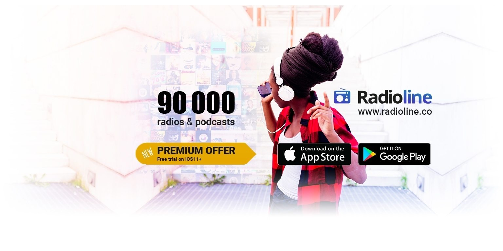
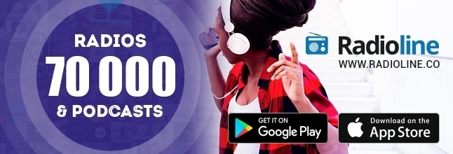
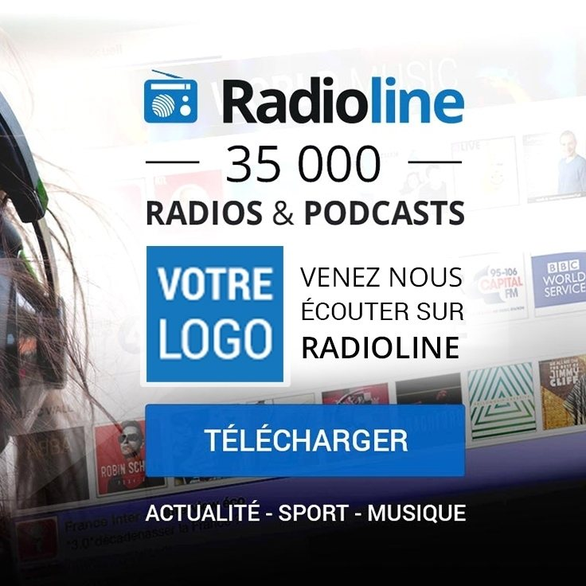

Social media graphic design
Social media for Radioline & its content providers




Some examples of creations made for Radioline social networks and its partners. Every different campaign, I was usually updating successively Facebook, LinkedIn, Youtube, Twitter headers, profile pictures and templates for posts
Created for:Radioline
Completed: 2014-2019.
Skills:Adobe Photoshop
Intuit.lab